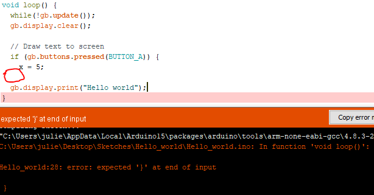
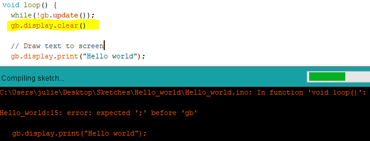

Compteur d'invités
Étape 1
Découvrez les variables, les structures conditionnelles si et l'affichage de rectangles.
Faites un outil pour compter des invités, du stock ou des moutons
Durée 20 minutes (et plus si affinité)
Niveau débutant total
Prérequis
- Avoir une Gamebuino META
- Avoir fait l'atelier Installation de la Gamebuino META
- Avoir fait l'atelierhello, world
Notre objectif est de faire un petit compteur d'invités, qui ajoute +1 quand on appuie sur haut, et qui enlève 1 quand on appuie sur bas. On peut trouver ce type de compteur (habituellement mécanique) à l'entrée des événements pour compter le nombre d'entrées. On peut aussi retrouver un code similaire dans un jeu pour compter le nombre de mouvements d'un joueur par exemple. Il va donc falloir stocker la valeur du compteur dans une variable et la faire changer si on appuie sur les boutons.
Les variables
Vous partez du squelette de programme que nous venons de découvrir avec "hello, world", avec quelques modifications :
#include <Gamebuino-Meta.h>
int counter = 0; // Nouvelle ligne
void setup() {
gb.begin();
}
void loop() {
while (!gb.update());
gb.display.clear();
gb.display.print(counter); // Quelque chose a changé ici :)
}
Regardons plus en détail les modifications que l'on a fait au programme :
int counter = 0;
Cette ligne déclare et initialise une variable que l'on affiche à l'écran dans loop:
counter est une variable qui mémorise la valeur du compteur. Une variable est un espace dans la mémoire de la Gamebuino pour stocker temporairement une donnée. Il peut s'agir du score actuel, de l'image d'un personnage, du texte d'un dialogue ou encore l'ensemble de la carte d'un jeu de plateforme. Lorsque l'on éteint la console, la valeur est perdue.
On lui donne une valeur initiale, ici 0 avec l'opérateur =. Nous verrons plus tard comment sauvegarder des données sur la carte micro SD.
Une variable a un nom, ici on a choisi de prendre counter. Il faut un nom qui décrit bien ce à quoi elle sert pour que le code reste lisible. En utilisant des variables qui s'appellent a, b et c, on a vite fait de se mélanger les pinceaux.
Une variable contient un type de donnée. Ici c'est int, abréviation de integer en anglais, ce qui veut dire "entier". On peut donc y stocker un nombre sans virgule, positif ou négatif, comme 0, 1, 5 ou -34 par exemple.
Ici, l'instruction ne se situe pas dans une fonction (les fonctions sont délimitées par des accolades { }). En effet, en C/C++ on peut placer des instructions hors des fonctions. Ces instructions seront lues et exécutées par la Gamebuino de haut en bas une fois au démarrage. Cependant, seules les instructions sont exécutées de cette manière (je vous rappelle que toutes instructions finissent par un point-virgule ;, et donc les fonctions, comme setup et loop, ne sont pas des instructions).
gb.display.print(counter);
On a déjà vu dans "hello, world" que print permet d'afficher une chaîne de caractères. Ce que l'on ne vous a pas dit, c'est qu'elle permet également d'afficher des variable comme des integer, par exemple. Dans notre cas, cette variable s'appelle counter.
if - La structure conditionnelle
Jusqu'ici rien ne bouge, ce n'est pas très palpitant. Comme son nom l'indique, une variable peut changer de valeur. Avant de commencer le code, je vais vous montrer la logique que l'on veut obtenir en pseudo-code. Ce n'est pas du code qui peut être compilé, mais il permet de facilement expliquer un algorithme :
Si on appuie sur "haut" (UP)
Alors on ajoute 1 à "counter"
Si on appuie sur "bas" (DOWN)
Alors on enlève 1 à "counter"
Si on appuie sur "menu" (MENU)
Alors on met "counter" à 0
Ici, on cherche un algorithme qui fait simplement varier la valeur de counter avec les flèches HAUT et BAS. On veut aussi que le bouton MENU remette counter à zéro. Vous voyez, rien de compliqué ? Le si s'utilise comme ça en C++ :
if (condition) {
// Faire des choses
}
Les bilingues parmi vous auront remarqué que if veut dire si, ça tombe bien ;). Si la condition est vraie, alors on exécute toutes les instructions qui se trouvent entre les accolades { }. Voilà comment ça se traduit en langage Gamebuino pour gérer l'appui sur le bouton 'HAUT'.
#include <Gamebuino-Meta.h>
int counter = 0;
void setup() {
gb.begin();
}
void loop() {
while (!gb.update());
gb.display.clear();
if (gb.buttons.pressed(BUTTON_UP)) { // Si on appuie sur "haut"
counter = counter + 1; // On ajoute 1 à "counter"
gb.sound.playTick(); // On joue un son
} // Fin du si
gb.display.print(counter);
gb.display.fillRect(counter, 8, 2, 4);
}

À vous de jouer !
Je vous laisse ajouter le code nécessaire pour que les boutons BAS et MENU remplissent leur rôle comme décrit dans le pseudo-code plus haut. Si vous avez un doute sur la syntaxe (l'orthographe du code), vous pouvez aller vérifier dans la Référence. Mais pour cette fois je suis sympa, je vous donne les noms des boutons qu'il vous faut : BUTTON_DOWN et BUTTON_MENU.
gb.sound.playTick();
J'en ai profité pour ajouter deux petites nouveautés. gb.sound.playTick permet de jouer un son prédéfini "tick". Comme on l'a mis dans la condition if, le son n'est joué que quand le bouton est appuyé.
gb.display.fillRect(x, y, w, h);
La fonction gb.display.fillRect permet de tracer un rectangle. Vous remarquerez qu'elle a plusieurs paramètres séparés par des virgules. Il est important d'avoir le bon nombre de paramètres et dans le bon ordre. Encore une fois, tout est détaillé dans la Référence, mais je vous explique rapidement :
-
xest la coordonnée horizontale du rectangle, en partant de la gauche de l'écran. Dans notre cas,counter. -
yest la coordonnée verticale du rectangle, en partant du haut de l'écran. Dans notre cas, 8, soit8pixels. -
west la largeur du rectangle en pixels, dans notre cas2 -
hest la hauteur du rectangle en pixels, dans notre cas4
Il vous reste donc à ajouter la fonctionnalité des différents boutons, et surtout personnaliser votre compteur !
Pourquoi ne pas changer la position, la taille et la couleur du rectangle ?
Ou changer l'opération pour multiplier et diviser par 2 au lieu de faire +1 et -1 ?
Attention de partir de 1 dans ce cas, car 0 * 2 = 0 hehe
Partagez vos créations sur les réseaux avec #gamebuino #tallycounter , on vous suit de près ;)
Remarques sur le C/C++
Un ordinateur (comme votre Gamebuino) peut exécuter des instructions très rapidement, mais il le fait bêtement. Il va suivre tout ce que vous lui dites à la lettre, littéralement. Donc la syntaxe et la logique de chaque instruction est assez stricte. Il y a deux catégories d'erreurs: les erreurs de syntaxe et les erreurs de logique. Les erreurs de syntaxe sont détectées lors de la compilation, et donc vous ne pourrez pas charger votre programme. Les erreurs de logique ne seront pas détectées, donc votre programme compilera et votre Gamebuino l'exécutera. Mais le programme ne fera pas ce que vous vouliez.
Pour réparer les erreurs de syntaxe, on peut s'aider du texte en rouge qui nous est fournis lors de la compilation. Voici quelques exemples récurrents:
Les accolades { }

C'est une erreur qu'on retrouve beaucoup chez les débutants. Les accolades viennent toujours par paires. Il se peut que vous en oubliez une ou que vous en mettez une de trop, dans les deux cas, le compilateur ne sera pas content car il y aura une accolade qui est seule :(
Pour vous aidez, mettez votre curseur sur une accolade ouvrante, l'accolade qui la ferme sera encadrée automatiquement (et vise-versa).
Rappel: les if et les fonctions doivent avoir des accolades.
Le point-virgule ;

Chaque instruction doit finir avec un point-virgule. Cette erreur est souvent facilement réparable.
Si vous bloquez sur une erreur et que vous n'arrivez pas à la résoudre, venez demander un coup de main sur discord ;)
Exemple de solution
Parmi l'infinité de compteurs possibles, voici le nôtre pour vous inspirer !
#include <Gamebuino-Meta.h>
int counter = 0;
void setup() {
gb.begin();
}
void loop() {
while (!gb.update());
gb.display.clear();
if(gb.buttons.pressed(BUTTON_UP)){
counter = counter + 1;
gb.sound.playOK();
}
if(gb.buttons.pressed(BUTTON_DOWN)){
counter = counter - 1;
gb.sound.playCancel();
}
if(gb.buttons.pressed(BUTTON_MENU)){
counter = 0;
gb.sound.playTick();
}
gb.display.setColor(BROWN);
gb.display.fillRect(0, 0, counter, gb.display.height());
gb.display.setColor(WHITE);
gb.display.setFontSize(4);
gb.display.setCursor(8,8);
gb.display.print(counter);
}
Vous êtes maintenant prêts à débuter votre jeu de Pong dans l'étape suivante !
Par Aurélien Rodot, modifié par Julien Giovinazzo